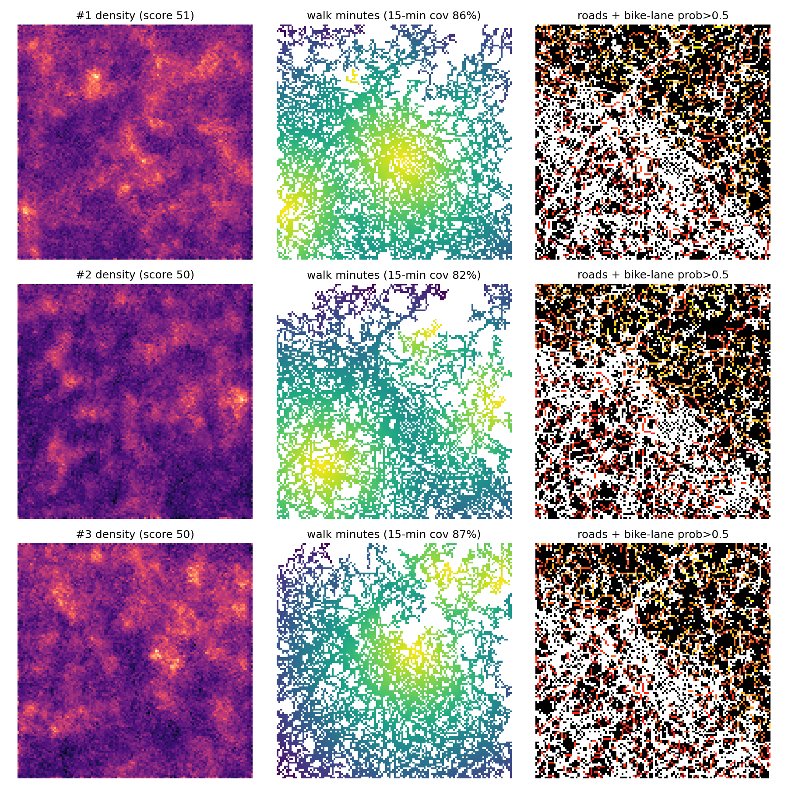
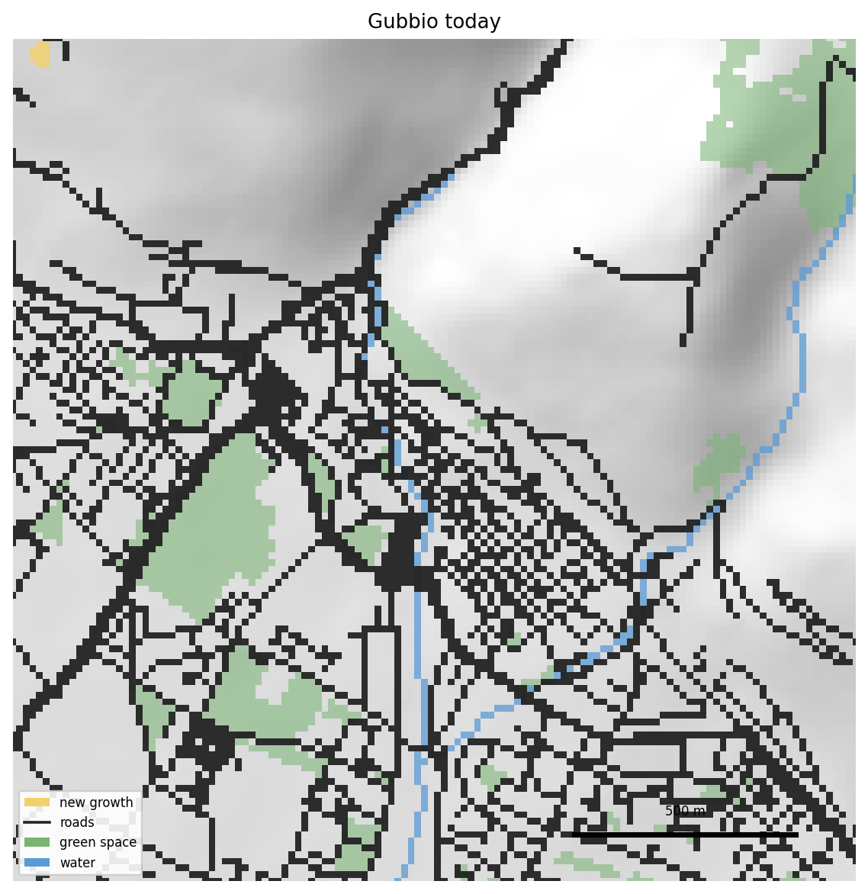
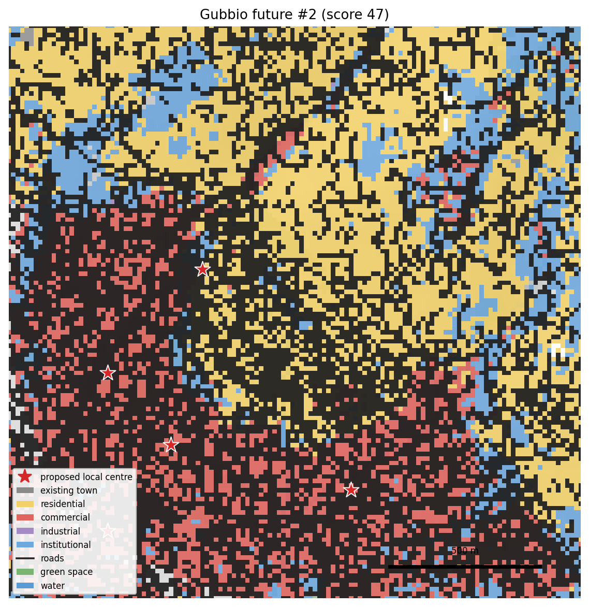
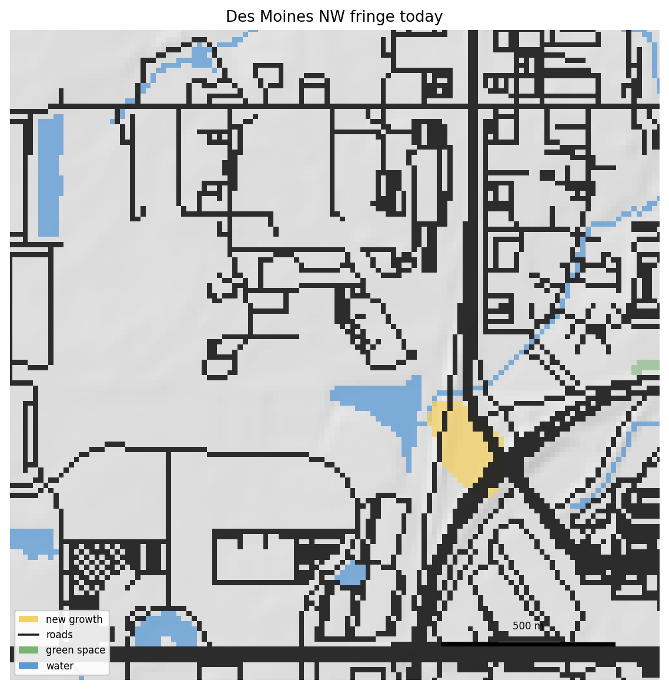
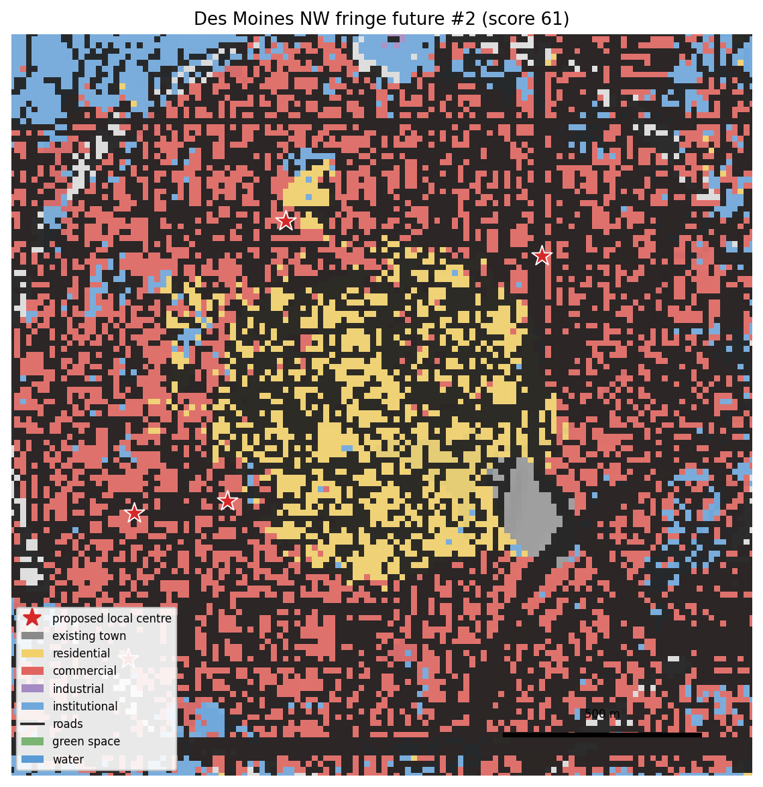

Try it: sketch or screenshot → grown town
Black lines are roads, warm colours are buildings, green is kept free. Upload works with map screenshots too: dark thin features read as roads, warm blocks as buildings. Terrain is procedural here; the research pipeline uses real elevation.
Real-town mode: grow a real place on the map
Click anywhere on the map to drop a 1.9 km study window. The site fetches real elevation (AWS terrain tiles) and real roads and buildings (OpenStreetMap) for that spot, runs the model, and drapes the generated growth over the map. Small towns in hilly Europe or Asia match the training data best; megacities will confuse it.
What you are looking at
The model is a compact conditional U-Net (~13M parameters) that denoises a growth plan given four conditioning rasters: elevation, slope, the existing built footprint, and the existing road network. Version 3 emits three channels: new roads, new built density, and a proposed amenity-density field. Alongside housing, it suggests where a bakery, school or clinic would let the new streets work as a 15-minute neighbourhood. In the full pipeline, sixteen futures are sampled per site and an 11-metric scorecard (walk coverage, green preservation, flood and landslide avoidance, congestion, access equity) keeps the most sustainable ones.
Example output




